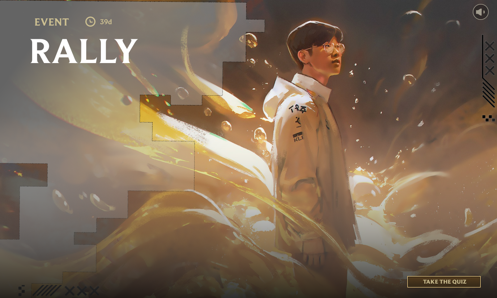
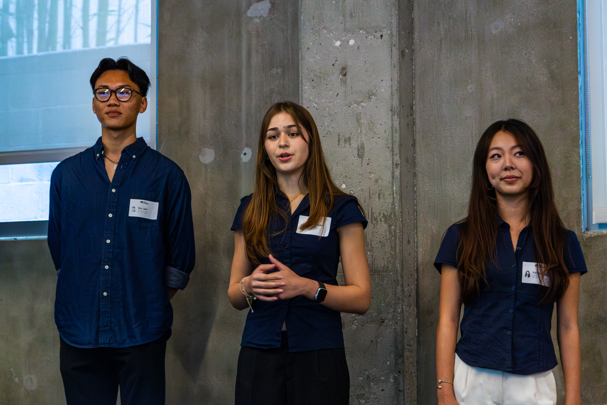
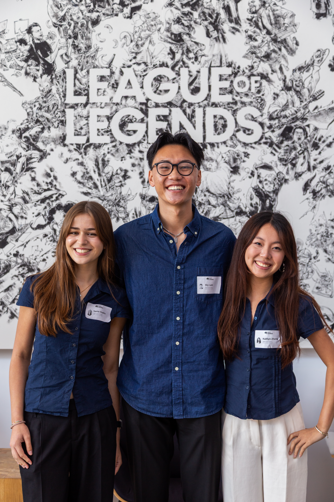
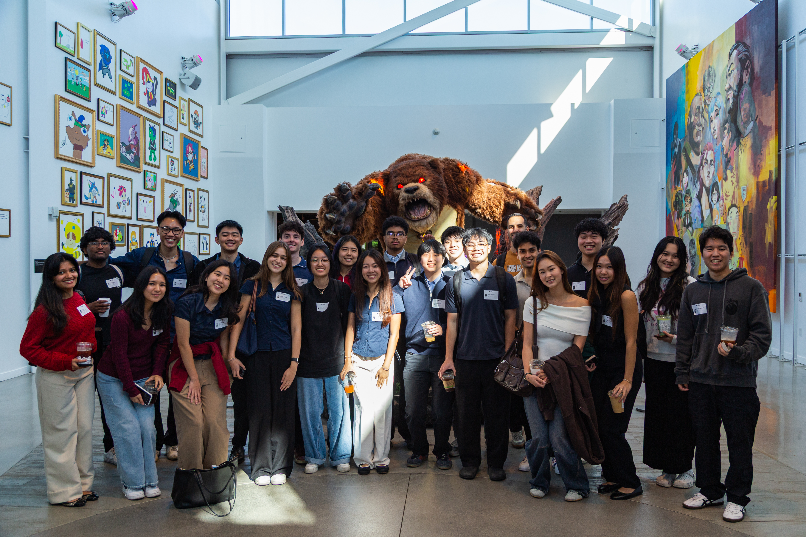

Designed an algorithm-matched, story-driven esports engagement system — architected end-to-end and recognized by Riot Games leadership for technical feasibility.
Riot Esports' mid-season lull has no story-driven way for fans to connect personally with pro players between splits. Existing in-client seasonal gaming events — Spirit Blossom, Star Guardian — proved the format works for skins, but nothing applied it to esports fandom itself.
Recognized by Riot Games leadership as the strongest submission for technical feasibility and user impact, with features recommended for implementation.


